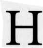

 orary is the art of astrological divination. Its roots lie in the ancient omen literature of Babylon that gave rise to all branches of astrology. It is not possible to date exactly the origin of horary astrology, but we can locate its underlying principles in the fifth century before Christ. Astrology could not exist until humans had to struggle with the concept of their future. The early nomads lived a day-to-day existence and did not trouble themselves with long-range planning. Only with the advent of the agricultural revolution in Mesopotamia around 8000 B.c. did the ability to predict the future become a matter of human survival.
The calendar was invented to predict changes in climate and the availability of water for crops-in short, to ensure a good harvest. Early observers began to note correlations between events in nature and human activity. Correspondences were drawn between worldly events and just about any natural phenomenon-the flight of birds, the livers of sacrificial animals, and most importantly the movements of heavenly bodies. But none of these observations could be recorded until the invention of cuneiform writing by the Sumerians in 3300 B.C.
In Babylon during the second millennium before Christ, hundreds of years of astrological correspondences were recorded on a series of tablets called the Enuma Anu Enlil. The information on these tablets formed the ancient database from which modern astrological theory developed-raw data waiting for the theoretical glue that would be provided by the early Greek philosophers. Most notably, Pythagoras of Samos (560-480 B.C.), a Greek philosopher, mystic and mathematician, provided the link between Babylonian astrological omen lore and modern astrological philosophy. Pythagoras and his followers, like many modern astrologers, believed in the transmigration of souls. Pythagoras taught that everything could be understood in terms of numbers. He discovered that the vibrating strings of musical instruments produced harmonious tones only when the lengths of the strings were ratios of whole numbers. He talked about similar ratios among the celestial spheres of the planets producing the "harmony of the spheres."
When applied to the horoscope, the Greek theory of music became the basis for the classical "major" astrological aspects, which display the same ratios of whole numbers as the harmonious tones. Horary-or for that matter, modern astrology-could not exist until a mathematical theory of aspects was developed, and it was the Pythagoreans who provided the philosophical rationale. The early Greek thinkers also invented the conceptual zodiac, a mathematical model of twelve equal thirty-degree signs patterned after the actual constellations. The earliest known horoscope using this modern mathematical astrology dates from around 409 B.C. Most likely, horary astrology originated in the period between this date and the life of Pythagoras.
The basic premise behind horary astrology is that a question, like a person, comes into the world at a particular significant moment. A horoscope cast for the birth of an inquiry is called a horary chart. An analysis of that chart reveals the circumstances surrounding the question and its eventual outcome.
The principle of cosmic sympathy underlies horary analysis. In other words, a parallel exists between the universe and the human mind. The planets, signs, and houses of the horoscope are symbols that reflect human thought and events of human life. If the astrologer can decipher the symbolic meaning of the chart, he or she can understand the significance of the matter at hand and foresee its eventual resolution. Horary is primarily an astrology of the twelve houses of the horoscope.
The person asking the question is always shown by the 1st house. The matter asked about belongs in one of the twelve houses. Each house has a planetary ruler. The fundamental axiom of horary astrology is this: The first major aspect between the rulers of the two essential houses determined by the question will show the outcome of that question. Usually the two significant houses are the 1st, which governs the person asking the question (the querent), and the house that rules the matter inquired about (the quesited). Of course, life is rarely simple and many factors can modify the answer given by the basic aspect between significators.
This book represents a substantial revision of my 1991 text Horary Astrology: The History and Practice of Astro-Divination. Since the time of the first publication, I have become more impressed with traditional techniques. In addition, I have come to understand more clearly the meanings of some of the terms used in classical horary astrology. In this revision I have tried to remain open-minded about the various schools of horary astrology while at the same time presenting a coherent system that works, as demonstrated by the case examples. Horary is an intricate and complex branch of the celestial science. My goal throughout has been to present the material in a clear and user-friendly manner that will make this ancient science fully accessible to the modern reader.
Let me credit those who most influenced my understanding of horary. I cut my eyeteeth on horary with the 1943 text Problem Solving by Horary Astrology by Marc Edmund Jones. Studying Jones led me back to the ancient Greek and Latin texts, the thirteenthcentury guide by Guido Bonatus and, of course, Christian Astrology by the master himself, William Lilly. Lilly's 1647 book remains the bible of the art. I also owe a debt of gratitude to the lectures on horary by contemporary astrologers Joan McEvers and Bobbye Bratcher-Nelson. Their clarity of thought and presentation are models to emulate. British astrologer Sue Ward's researches into Lilly's original manuscripts were especially enlightening. The Horary Practitioner, edited by Carol Wiggers, Sue Ward, and C. J. Puotinen, has made available a wealth of material on traditional horary methods. I would have been lost in trying traditional techniques without the superb computer program Horary Helper by Allen Edwall. Project Hindsight, inspired by Rob Hand, Robert Schmidt, and Rob Zoller, has made crucial astrological classics available to the modern world. Bruce Scofield has been a model of scholarship and dedication to the celestial art. Finally, I must thank the readers of the first edition who wrote with their questions, corrections, criticisms, and suggestions for improving the text.
Writing and revising this book has been great fun. As such, it was a 5th house activity. In the process I have learned much about astrology and made the acquaintance of several excellent horary astrologers who all have their own unique ways of practicing the art. I hope I have conveyed my enthusiasm for horary along with what I have learned. I make no claim to have all the answers. On the other hand, I am a serious and devoted student who freely admits he has much to learn from his own charts and from the experience of other astrologers. Any feedback or constructive criticism can be sent to me through the publisher.
Although a novice at astrology could read and understand this text, it has been written for the intermediate astrologer. A basic understanding of the signs, planets, aspects, and houses will add immensely to the reader's appreciation of this material. My aim has been to bring clarity, order, historical accuracy, and reasonableness to the muddled horary universe. Whatever your background, may your venture into horary be as enjoyable and enlightening as it has been for me.
-Anthony Louis November 1996
ACKNOWLEDGMENTS
First, I must thank my wife, Linda, and my sons, David and Aaron, for their patience and support while I was writing and revising this manuscript. I hope I was not too much of an absent husband and father when I went off to horary land.
Next, I must express gratitude to the many astrologers, colleagues, and friends who helped shape the present volume in direct or indirect ways. Joan McEvers gave generously of her time, advice, and horary questions. Without Joan's inspiration this book would never have been written.
Bruce Scofield reviewed the text and gave his imprimatur that I was not too far afield in my historical approach to horary. Irish astrologer Maurice McCann sent many letters across the Atlantic to point out errors and suggest helpful corrections for the revised edition.
The folks at The Horary Practitioner kindly offered their time and knowledge of horary. Carol A. Wiggers graciously agreed to write a foreword. C. J. Puotinen reviewed the definitions of horary terms and made many helpful suggestions. Sue Ward engaged in a lively correspondence across the Atlantic that kept me on my toes.
Computer programmer and astrologer Allen Edwall helped to clarify the meanings of some of the traditional horary terms and techniques. I would have been lost without the accuracy and information in his wonderful computer program Horary Helper for Windows. No horary astrologer should be without it.
Special thanks go to Diana K. Rosenberg for her thoughtful review of the compendium of fixed stars that appears in the appendix. Indirect thanks should also go to Robert Hand for his scholarly lectures and his encyclopedic grasp of astrology that served as the model I tried to emulate.
My friends Michael Cunningham and Luis Alvarado both read the manuscript carefully for content, grammar, and style. Their comments helped make the text more readable, and I thank them for their gifts of time, encouragement, and friendship.
Jill Dotlo invited me to her horary study group, where I met several astrologers dedicated to learning the art. The lively discussions helped clarify my thinking about some vexing horary principles.
The editor at Llewellyn of the first edition, Tom Bridges, was a delight to work with. His keen eye and sense of balance and proportion also helped shape this book. I feel a sense of loss that our work together has drawn to a close. Best of luck to Tom in all his future endeavors. I am also very grateful to Ken Schubert who edited the current edition with such great care and professionalism.
Finally, I wish to thank anyone whose name I have inadvertently omitted in the above listing, and also all who contributed horary questions to the text, especially my friend Sara, who allowed me to put into print one of the more painful episodes of her life.
There are more things in heaven and earth, Horatio, than are dreamt of in your philosophy.
-Shakespeare, Hamlet
0 Swear not by the moon, the inconstant moon, that monthly changes in her circled orb.
-Shakespeare, Romeo and Juliet
The heavens declare the glory of God And the firmament sheweth his handiwork. Day unto day uttereth speech, And night unto night sheweth knowledge. There is no speech nor language, Where their voice is not heard.
-Psalm XIX
To every thing there is a season, and a time to every purpose under heaven.
-Ecclesiastes 3:1
There are many who do not presume either to bathe, or to dine, or to appear in public, until they have diligently consulted the status of Mercury and the aspects of the Moon according to the rules of astrology.
-Ammianus Marcellinus (fourth century historian)
Mortal as I am, I know that I am born for a day, but when I follow the serried multitude of stars in their circular course, my feet no longer touch the earth; I ascend to Zeus himself to feast on ambrosia, the food of the Gods.
-Claudius Ptolemaeus of Alexandria